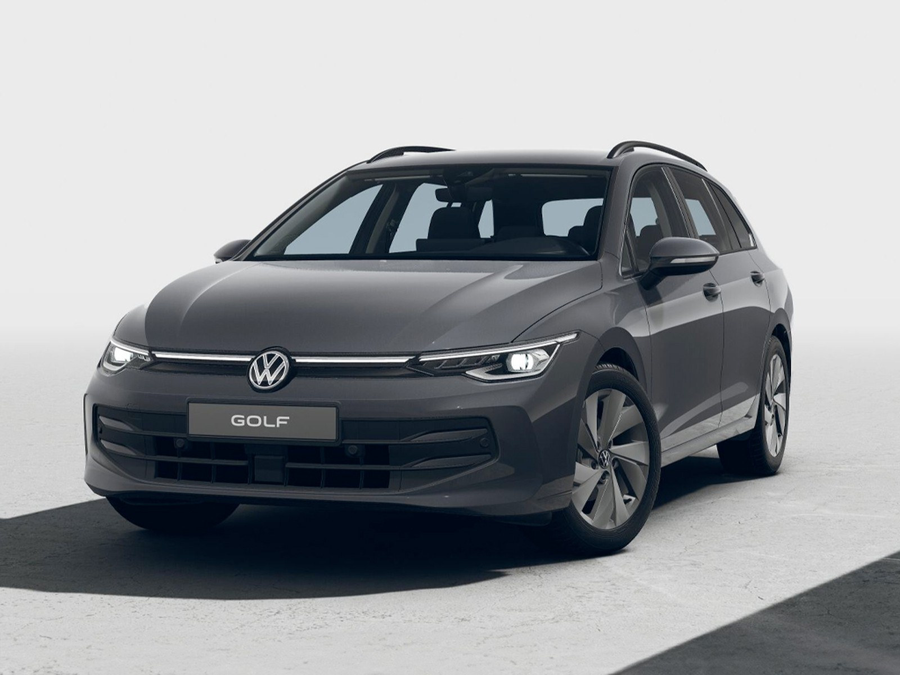
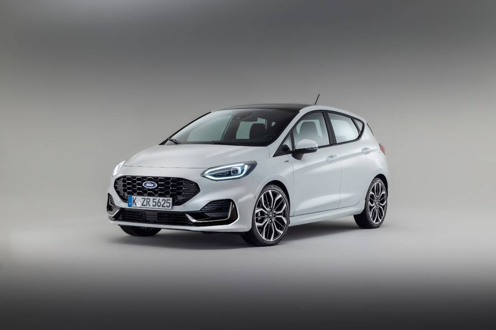
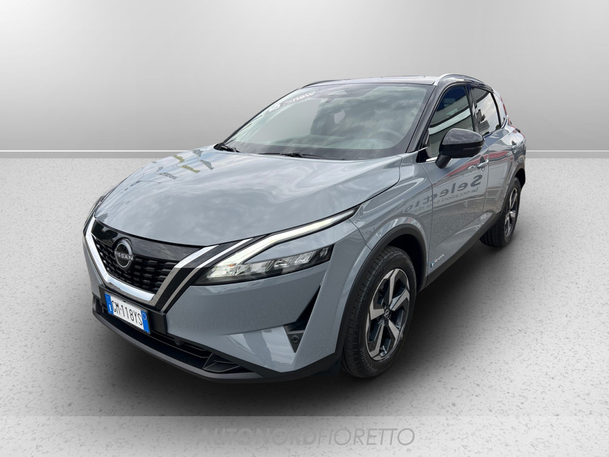
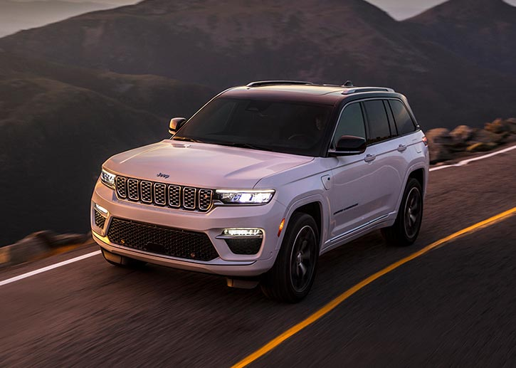

| AUTO USATE | |||
| Modello | Prezzo | Informazioni | Immagine |
| Volkswagen Golf | Da circa 8.000 € a 20.000 €, a seconda dell’anno, modello e chilometraggio (modelli dal 2015 al 2020). | La Volkswagen Golf è una delle auto più popolari al mondo per la sua affidabilità, l'equilibrio tra comfort e sportività, e la qualità costruttiva. 1.0 TSI, 1.6 TDI, 2.0 TDI, con vari livelli di potenza (da 90 CV a 200 CV nelle versioni sportive come la GTI) |  |
| Ford Fiesta | Da circa 5.000 € a 14.000 € (modelli dal 2015 al 2020). | La Ford Fiesta è una delle city car più vendute in Europa, per la sua maneggevolezza e il piacere di guida. 1.0 Ecoboost, 1.5 TDCi, 1.6 TDCi (versioni a benzina e diesel). |  |
| Nissan Qashqai | Da circa 8.000 € a 18.000 € per modelli dal 2015 al 2020. | Il Nissan Qashqai è uno dei SUV compatti più venduti in Europa, noto per la sua affidabilità, consumi contenuti e un buon livello di equipaggiamento. È l'ideale per chi cerca un'auto familiare, versatile e facile da guidare. 1.2, 1.5 dCi, 1.6 benzina. |  |
| Jeep Grand Cherokee | Da circa 18.000 € a 40.000 € (modelli dal 2015 al 2020). | Il Jeep Grand Cherokee è un SUV di grandi dimensioni con ottime capacità fuoristrada e comfort. È dotato di motori potenti e una buona qualità costruttiva, ideale sia per l'uso quotidiano che per avventure più impegnative. 3.0 V6 diesel, 3.6 V6 benzina, 5.7 V8. |  |